指標深度解析
普及能源服務
在 2030 年以前，確保所有人都能取得負擔得起、可靠且現代的能源服務。
提高再生能源比例
大幅提高全球能源結構中，再生能源的使用占比，減少對化石燃料的依賴。
加倍能源效率
透過科技研發與基礎設施升級，使全球能源效率的改善率翻倍。
精選館藏圖書 (Books)
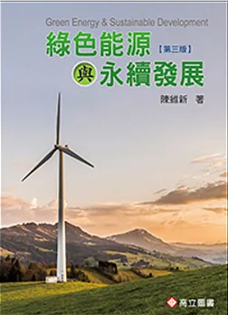
綠色能源與永續發展
索書號：400.15 8764 2018
探索綠能轉型關鍵，以潔淨動力驅動經濟增長，實踐人與自然共好的未來。
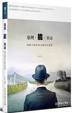
臺灣.能.革命
索書號：554.68 855 2014
立足地質現況並反思核電風險，推動社區綠能以開創自主永續未來。
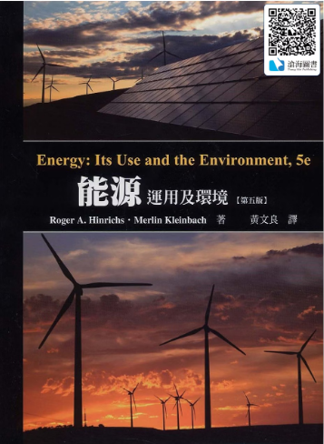
能源-運用及環境
索書號：400.15 8455 2013
結合物理原理剖析能源運用，平衡資源消耗並致力於環境永續轉型。
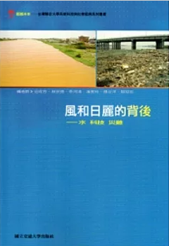
風和日麗的背後
索書號：554.61 8677 2013
剖析水資源治理的科技侷限，透過災難反思重構人與自然的永續關係。
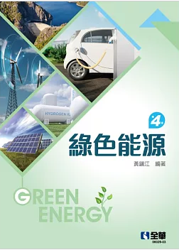
綠色能源
索書號：337.42 8353 2022
系統性論述再生能源技術與節能策略，提供能源轉型的專業實務指引。
DVD 影音館藏 (Audio-Visual)
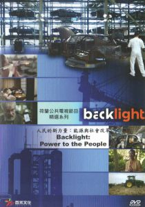
能源與社會改革
索書號：DVD 400.15 8955 2014
記錄綠能賦予社區的轉型力量，展現人民推動能源民主的改革進程。
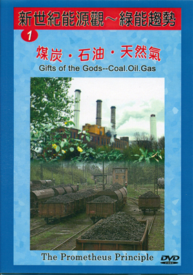
綠能趨勢
索書號：DVD 400.15 8457 2021
掌握全球能源轉型趨勢，剖析再生能源技術以預見綠色經濟新未來。
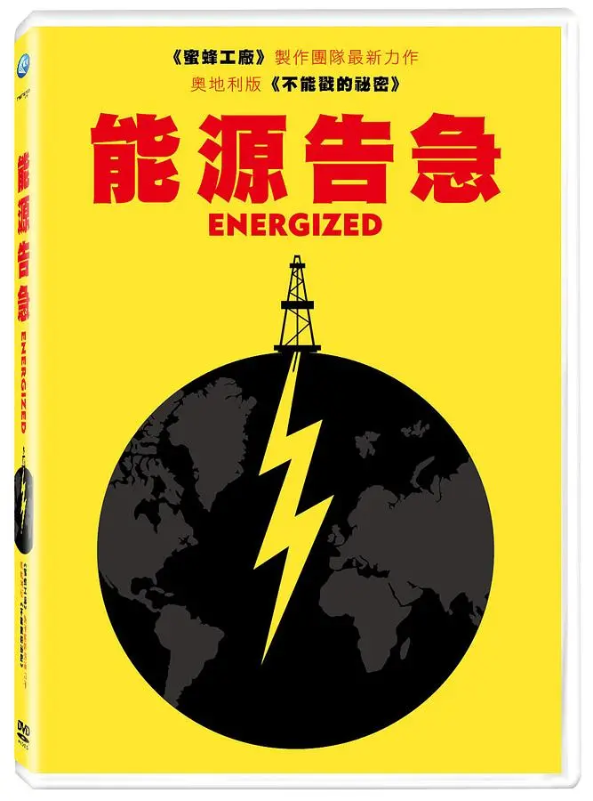
能源告急
索書號：DVD 554.68 8894 2015
深度解構再生能源利弊與能源權力，省思核災後永續經營的未來路徑。
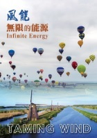
風能
索書號：DVD 448.165 857 2020
解析風力發電原理，展示其應對氣候危機的潛力，將自然之風轉化為無限綠能。
館藏電子書 (E-Books)
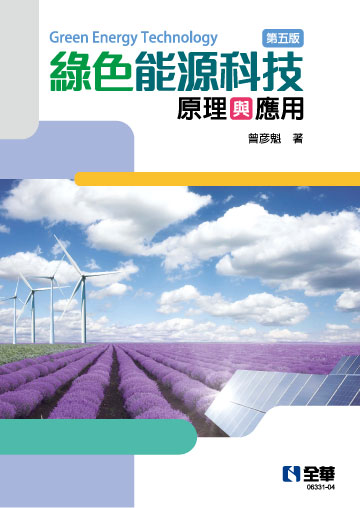
綠色能源科技
深度解構再生能源技術與核能利弊，從歷史經驗探尋能源轉型關鍵。
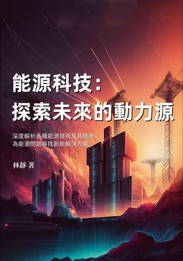
探索未來的動力源
系統解析多元能源技術與利弊，全面掌握能源開發現狀與綠色轉型趨勢。
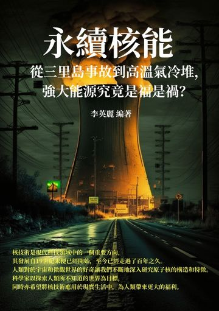
永續核能
綜覽核技術百年演進與多元應用，深度剖析核安全與智慧化轉型趨勢。
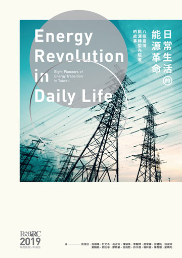
日常生活的能源革命
以系統性思考解析能源結構，結合在地案例開啟理性轉型的全民對話。
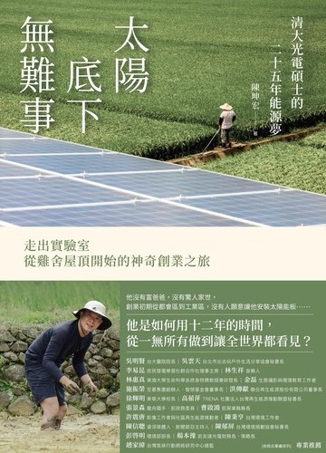
太陽底下無難事
記錄從實驗室到屋頂的創業旅程，看見二十五年光電夢想如何落地實踐。